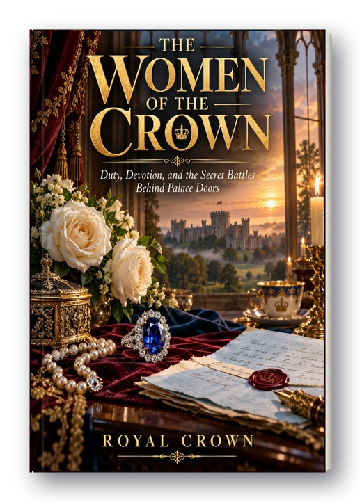
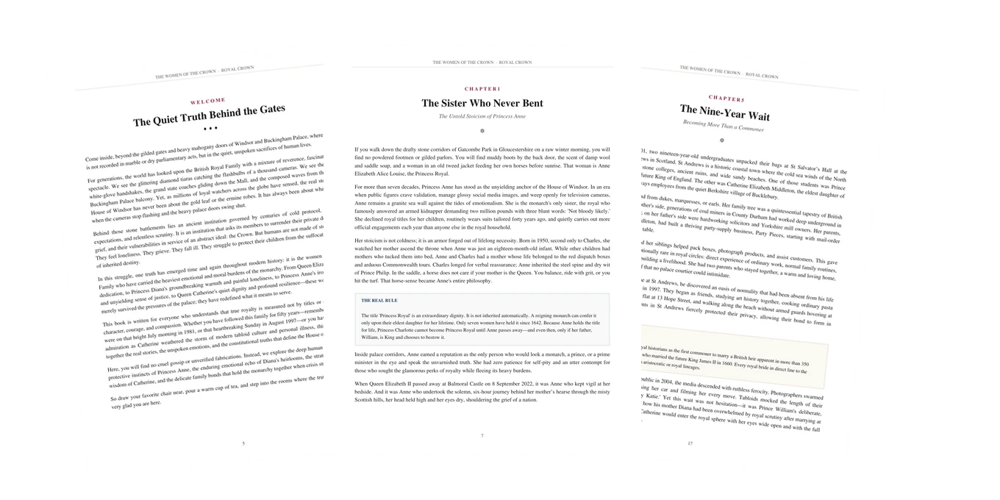

The Women of the Crown
Duty, Devotion, and the Secret Battles Behind Palace Doors
How did Princess Anne break court distance to shelter Catherine? What did Diana write in her private Letter of Wishes? Why did Catherine wait nine patient years?
The untold human reality of the four women who held the British monarchy together when crisis struck.
Both parts are also sold on their own: PDF $16.99 · audiobook $16.99
Real pages, not mock-ups.
The Women of the Crown takes you past the cameras to explore the quiet fortitude, unwritten laws, and emotional bonds behind the palace facade.

Start reading right now.
From the muddy boots of Gatcombe Park to the hospital corridors in Reading, see how the women of the royal household carry the true burden of the Crown.
If you walk down the drafty stone corridors of Gatcombe Park in Gloucestershire on a raw winter morning, you will find no powdered footmen or gilded parlors. You will find muddy boots by the back door, the scent of damp wool and saddle soap, and a woman in an old tweed jacket feeding her own horses before sunrise. That woman is Anne Elizabeth Alice Louise, the Princess Royal.
For more than seven decades, Princess Anne has stood as the unyielding anchor of the House of Windsor. In an era when public figures crave validation, manage glossy social media images, and weep openly for television cameras, Anne remains a granite sea wall against the tides of emotionalism. She is the monarch's only sister, the royal who famously answered an armed kidnapper demanding two million pounds with three blunt words: 'Not bloody likely.'
She declined royal titles for her children, routinely wears suits tailored forty years ago, and quietly carries out more official engagements each year than anyone else in the royal household.
Her stoicism is not coldness; it is an armor forged out of lifelong necessity. In the saddle, a horse does not care if your mother is the Queen. You balance, ride with grit, or you hit the turf. That horse-sense became Anne's entire philosophy.
Everything in the book, named.
Four distinct parts covering the emotional sacrifices, legal precedents, and personal triumphs of the women behind the monarchy.
The Sister Who Never Bent
The untold stoicism of Princess Anne, the 1974 kidnapping attempt, and why the title Princess Royal is held for life and cannot be passed to Charlotte yet.
"You Do Not Have to Be Brave With Me"
The unannounced spring 2024 visit to Windsor where Anne gave Catherine the breathing space to weep, heal, and protect her children from media noise.
The Girl in the Golden Cage
What the cameras never saw: Diana's transition from kindergarten assistant to global icon, the Middlesex Hospital AIDS ward, and the loneliness behind palace walls.
The Heirlooms That Speak
The 12-carat Ceylon sapphire ring, the Lover's Knot Tiara, and how Diana's personal jewels were divided between William and Harry's future wives.
The Nine-Year Wait
The quiet steel of Bucklebury: why Prince William chose a long courtship to protect Catherine, and how patience forged an unshakeable consort.
The Bench in the Daffodils
The 22 March 2024 video announcement that moved the world: putting children before protocol, chemotherapy recovery, and the road to remission.
Drawing the Line in the Sand
Quiet authority behind closed doors: the famous four words 'Some recollections may vary,' day school routines, and protecting the royal brand.
Behind the Gilded Gates & Two Princesses
The Counsellors of State Act 2022, Regency protocol, and how Diana and Catherine redefined what it means to be Princess of Wales.
Made to be read and heard.
Answers the comment-section questions
Why can't Charlotte be Princess Royal? What happened behind the scenes during Catherine's surgery? Every chapter delivers verified answers.
Up to date
Checked against official and public sources as of 2026, including Catherine's remission and the newest royal appointments.
Large, clear print
Curated formatting, memorable quotes, and real-rule boxes you can read comfortably on any tablet, phone, or print at home.
Read it or hear it
The complete 28-minute studio audiobook narrates the whole book with warmth and measured British cadence.
Who this is for, plainly.
- You admire the resilience and unyielding loyalty of Princess Anne
- You remember Diana's human touch and want to understand Catherine's modern leadership
- You want the deep emotional truth rather than superficial paparazzi headlines
- You enjoy a quiet evening read with thoughtful reflections
- You want sensational tabloid gossip: this is a respectful, dignified, and factual tribute
- You prefer manufactured palace drama over authentic historical biography
The book and its audiobook, together.
Read it in large print when you have a quiet hour. Press play when your hands are busy. Both parts are sold on their own too; together they cost less.
- 32-page PDF, read on any device or print at home
- The 28-minute studio audiobook, MP3, play or download
- Your own private download page, the moment you pay
| The PDF e-book, 32 pages | $16.99 |
| The audiobook, 28 min | $16.99 |
| Bought separately | |
| Together, today | $24.99 |
Both parts are also sold on their own: PDF $16.99 · audiobook $16.99
Instant download. Yours tonight,
to keep forever.
Read on your tablet, listen on a walk, or keep the files on your computer. Your download page opens the moment payment clears. There are no subscriptions and nothing to wait for in the post.
Before you decide.
How up to date is it?
It is correct to the best of our knowledge as of 2026, checked against royal.uk, official biographies, and public records. Catherine's health journey and recent patronages are fully documented.
Is it hard to read?
No. It is written in warm, engaging, and plain words for everyday readers, explaining every royal custom and protocol clearly.
How do I get my book and audiobook?
Right after checkout you land on your own private download page with your PDF and full audiobook. Bookmark that page; you can return to it any time from any device.
What devices can I read and listen on?
The PDF is formatted for crystal-clear reading on Apple iPad, iPhone, Android, Kindle, or laptop screens. The audiobook is universal high-quality MP3, playable directly in any browser or audio app.
Is this connected to the Royal Family?
No. Royal Crown Editions is an independent publisher. Our publications are not connected to, approved by, or endorsed by the Royal Family, the Royal Household, or any palace administration.
The Women of the Crown, yours tonight.
$24.99 for the book and its audiobook together. Or select individual formats below.